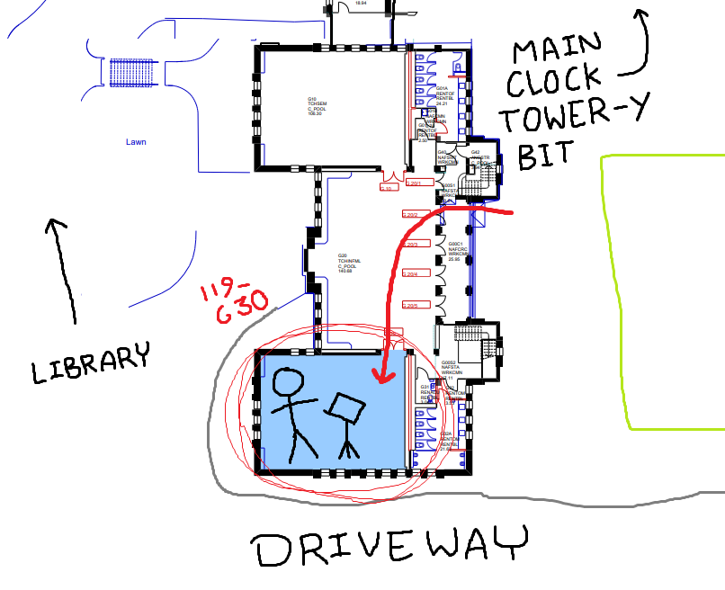
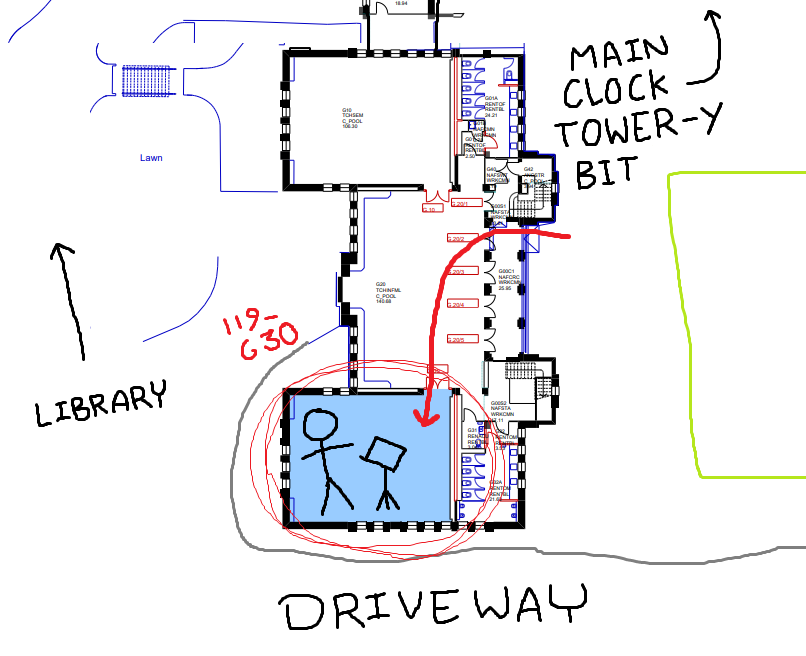

Our demo meeting for semester 2 is next Wednesday (5th of August)!
It's from 6 - 8 pm with a 15-minute break in the middle. During the break, there'll be
Free Pizza! Vegetarian options and other refreshments will also be available.
And, if you'd like to speak, you can! Let us know if you're keen and we'll give you something easy to talk about.
Or a hard one, if you're a masochist.
Join us in the East-Wing of the Clock Tower, room 119-G30!
(here are some helpful maps)
 

You'll also notice that our website now works.